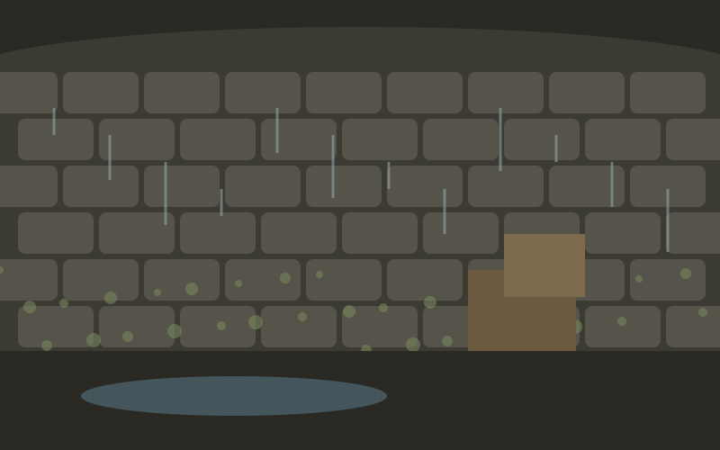
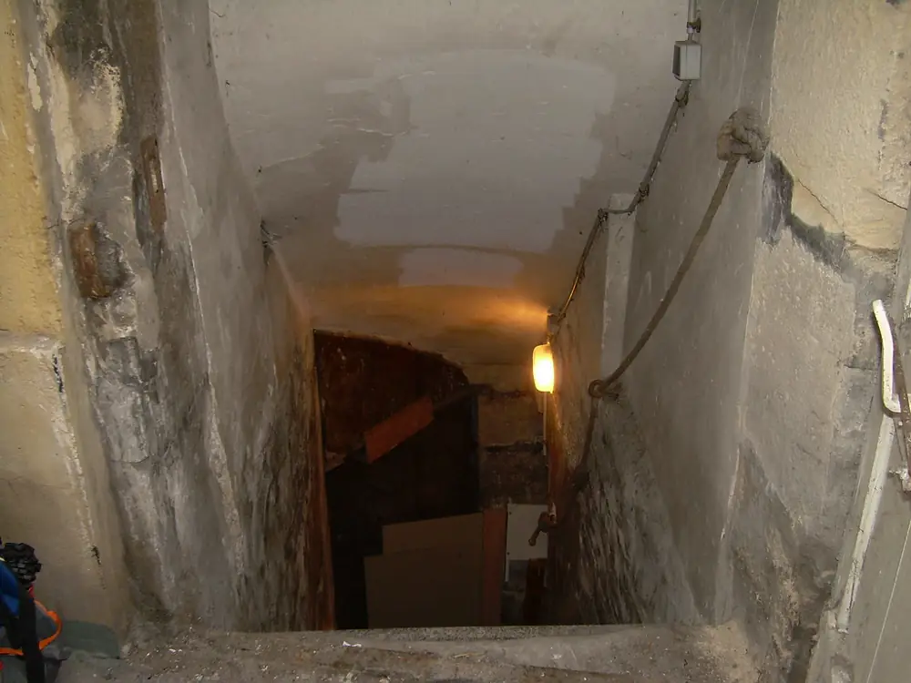
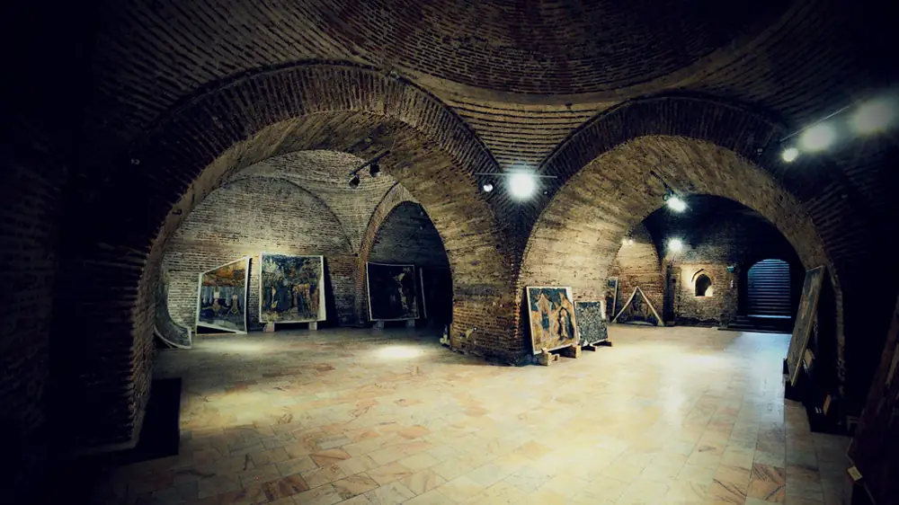

Services · Basements and cellars
A cellar you can actually use.
From a dry place for storage to a properly lined room. We start by finding out how wet it is and why.

BeforeAfterIllustrationIllustration, not a real job. Drawn for this demo to show the kind of change you can expect.
Signs
What you might notice
- Damp or wet walls and floor.
- A musty smell coming up through the house.
- Salt marks and flaking on the walls.
- Puddles after heavy rain.
Causes
What's usually behind it
- Ground water pressing on walls below ground level.
- Leaking drains or gutters nearby.
- Little or no ventilation.
- Old coatings that have failed.
What we do
How we deal with it
- We survey the cellar and talk about what you'd like to use it for.
- We fix what we can from the outside first, like drains and gutters.
- For storage, better ventilation is often enough.
- For a usable room, we explain the lining and drainage options.
- You get a written plan, with a clear quote for each option.
Sample jobs
Basements and cellars: from the gallery

Stock photoCellar stairsLancaster · sample
Stock photoVaulted cellarLancaster · sampleMade-up sample jobs, with stock photos.
Questions
Common questions
Can any cellar be made dry?
Most can be made a lot drier. How far to go depends on what you want to use it for, and we'll be straight about that.
Do I need planning permission?
Not usually for making an existing cellar dry, but some uses and listed buildings are different. Check with your council, and we can point you to the right people.
How long does it take?
A ventilation job can be a day or two. A full lining takes longer. You'll get a timescale with the report.
General information only. Every house is different, so speak to a qualified surveyor about yours.
Not sure what you're looking at?
Book a survey. We'll find the cause and explain it in plain English before anyone recommends a treatment.